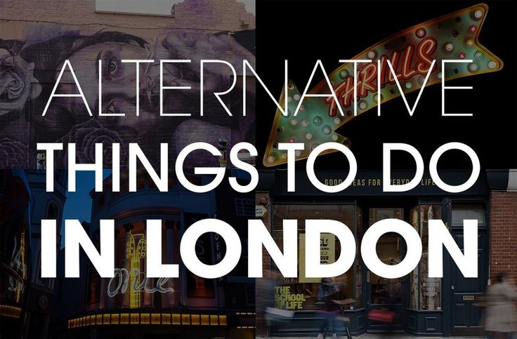

London
Bienvenue à Londres ! Le surnom de « ville-monde » donné à Londres s'appuie sur une réalité, si bien que chacun devrait la visiter au moins une fois. La ville ne cesse d'absorber les influences et les cultures de ses immigrants, véritables moteurs de la cité, mais elle n'en est pas moins la quintessence de l'âme britannique avec ses célèbres taxis noirs, ses bus rouges à impériale ou ces bâtiments emblématiques que sont Westminster, Tower Bridge ou, plus récemment, le London Eye, dont les silhouettes se reflètent sur les eaux troubles de la Tamise.
